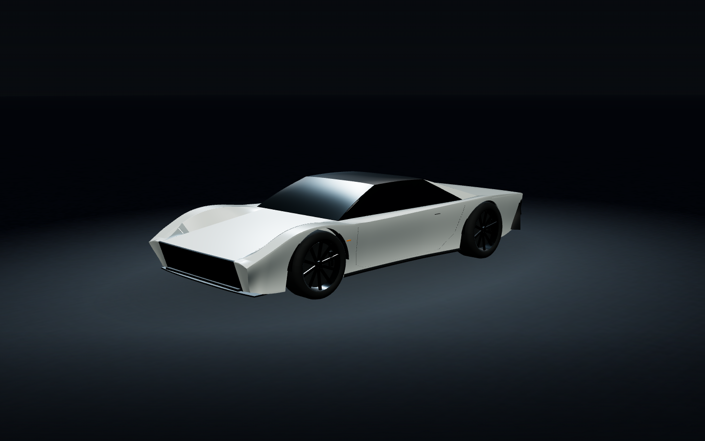
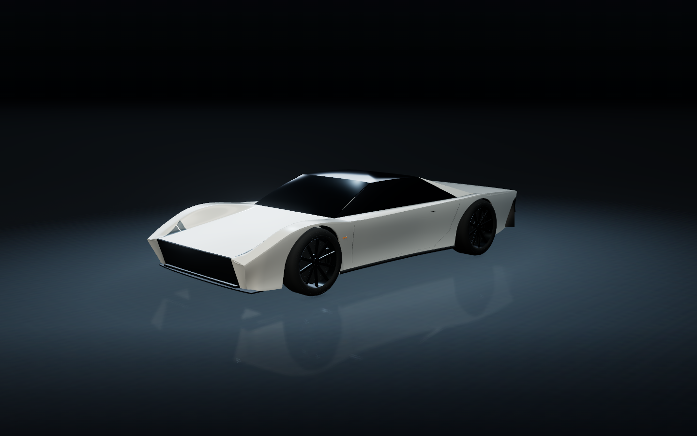
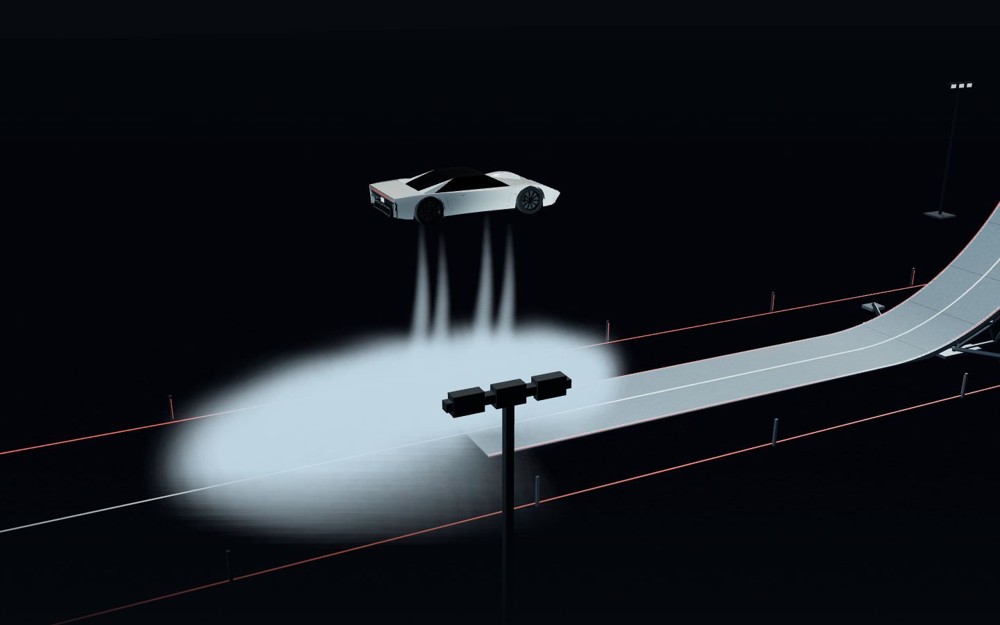
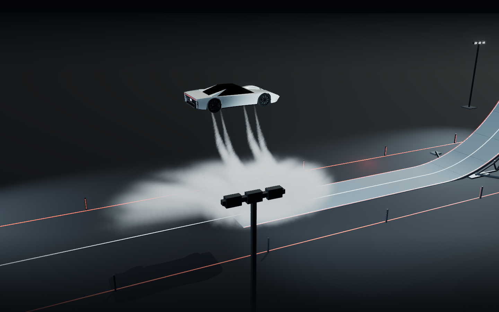

同一镜头，查看实际变化。
打开增强版 Demo ↗左侧为此前 V2，右侧为本次增强版。拖动分界线，也可聚焦滑块后用方向键调整。两版使用相同相机、分辨率与重放时间；模型曲面、材质、灯光和渲染设置随版本改变。
01 / 车身与棚拍材质


BEFORE / V2AFTER / V3
重点看前翼子板过渡、车漆和玻璃反射、轮圈与制动盘、车底接触和地面反射。
02 / 离轨制动白气 · 完整重放 00:55


BEFORE / V2AFTER / V3
增强版使用历史喷口姿态建立空间尾迹，并在精致模式用深度信息柔化气雾与几何的交界。这是确定性视觉近似，不是流体求解。